Jakub Ostrzołek
WSI ćwiczenie 7 - Modele bayesowskie
Opis ćwiczenia
Celem ćwiczenia była implementacja naiwnego klasyfikatora Bayesa.
Model ma następujące metody (zgodne z biblioteką sklearn):
fit(X, y)- trenowanie modelu dla danych wejść X i spodziewanych wyjść ypredict(X)- przewidywanie wyjść y dla danych wejść X za pomocą modelu
Aby klasyfikator dział dobrze, należy przed użyciem zdyskretyzować dane wejściowe
Wykorzystane zewnętrzne biblioteki
numpymatplotlibsklearnpandas
Testowanie klasyfikatora
Aby przetestować klasyfikator należy wykonać skrypt main.py, uprzednio zmieniając jego parametry zgodnie z zapotrzebowaniem.
Skrypt wygeneruje nowy model i wytrenuje go używając n-walidacji krzyżowej, a następnie wyświetli porównanie osiągów dla każdego podziału zbiorów. Na koniec zostaną pokazane osiągi najlepszego przebiegu (tego z najwyższą sumą metryk) dla zbioru testowego.
Wykresy i wnioski
Parametr TEST_SIZE
Parametr ten kontroluje jaka część zbioru wine jest przeznaczona na zbiór testowy.
TEST_SIZE |
porównanie przebiegów krzyżowania | osiągi najlepszego przebiegu krzyżowania |
|---|---|---|
| 0,1 |  |
 |
| 0,2 | 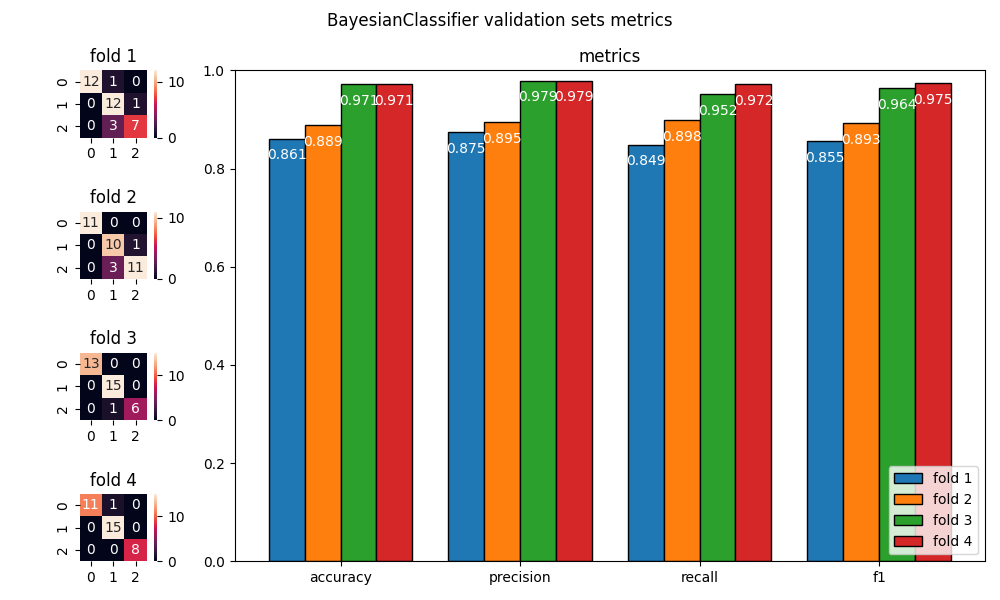 |  |
| 0,3 | 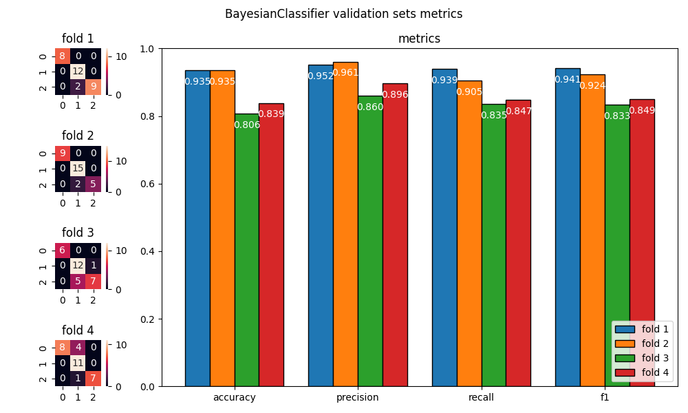 | |
| 0,4 | 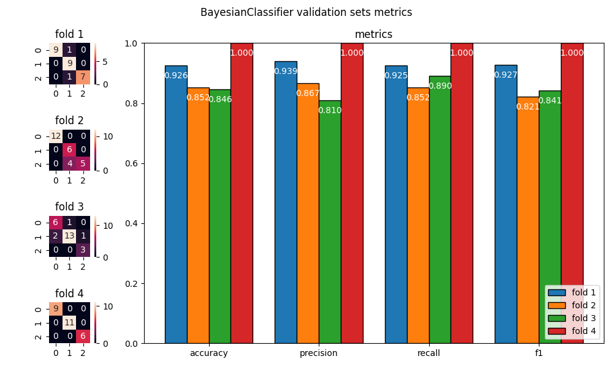 |  |
| 0,5 | 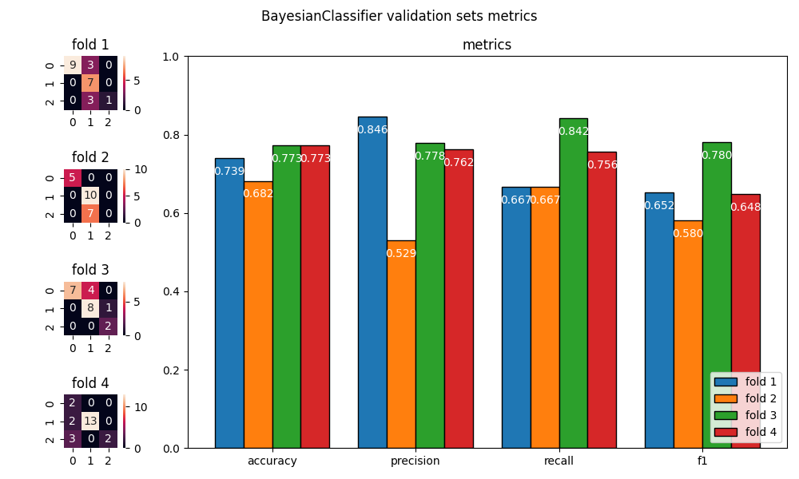 |  |
- zbyt duża wartość tego parametru zmniejsza osiągi modelu, ponieważ zawęża się liczność jak i różnorodność zbioru treningowego
- zbyt mała wartość może powodować większe wachania oceny modelu, przez co jest ona niepewna. Zjawisko to może występować w obie strony (zbyt optymistyczna lub zbyt pesymistyczna ocena).
Parametr N_SPLITS
Parametr ten kontroluje na ile równych części dzielony jest zbiór, który zostaje rozdysponowany na zbiór treningowy i walidacyjny (1 część na walidacyjny, reszta na treningowy).
N_SPLITS |
porównanie przebiegów krzyżowania | osiągi najlepszego przebiegu krzyżowania |
|---|---|---|
| 2 |  |
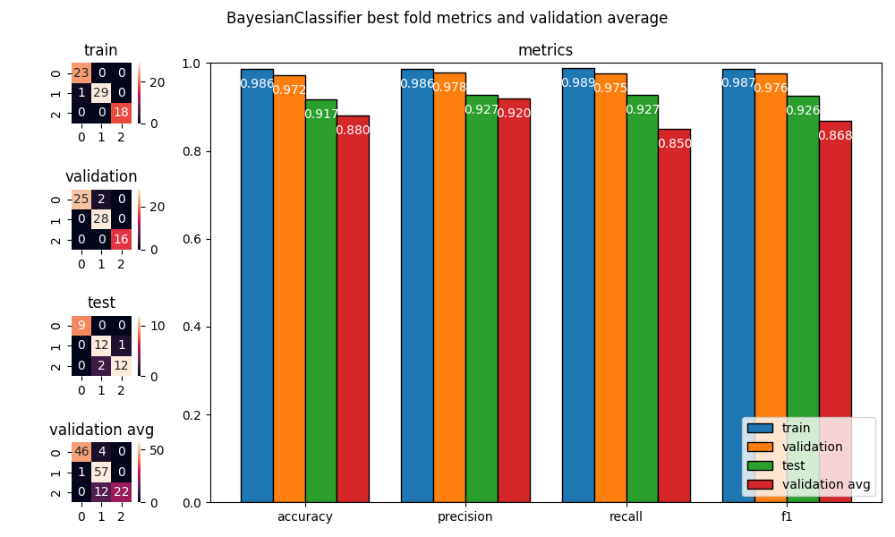 |
| 3 | 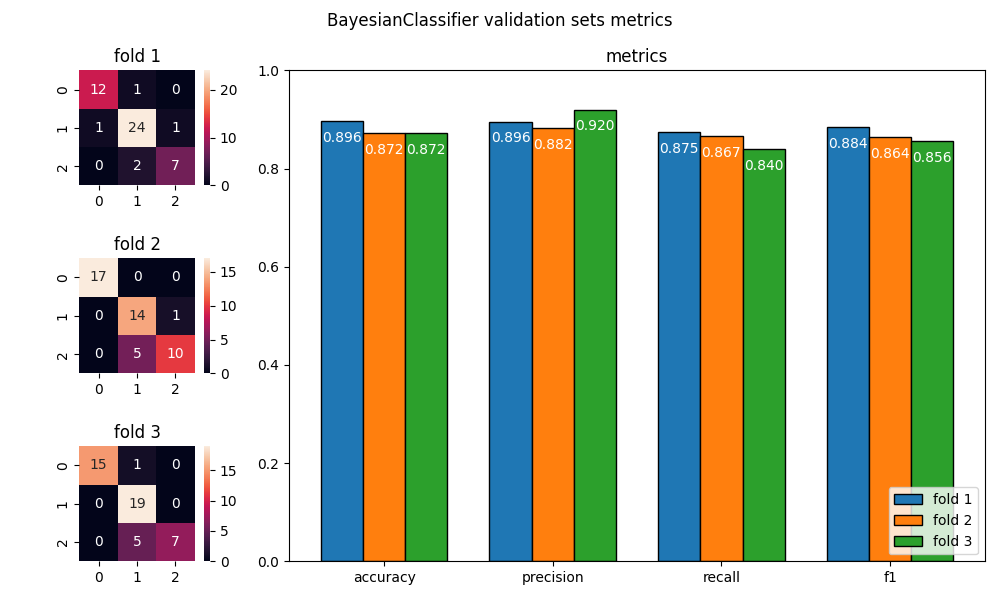 | 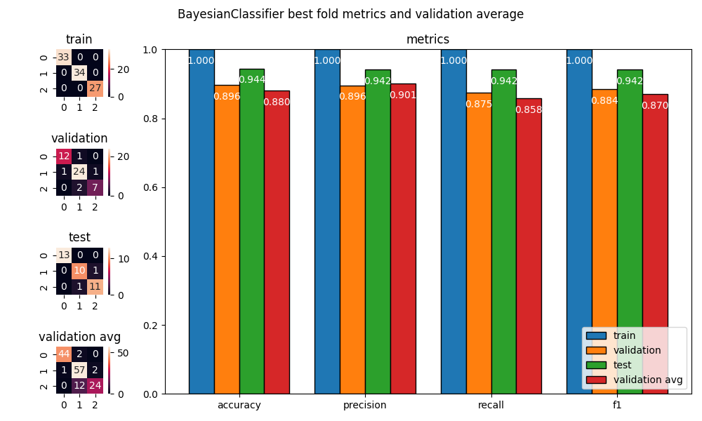 |
| 4 | 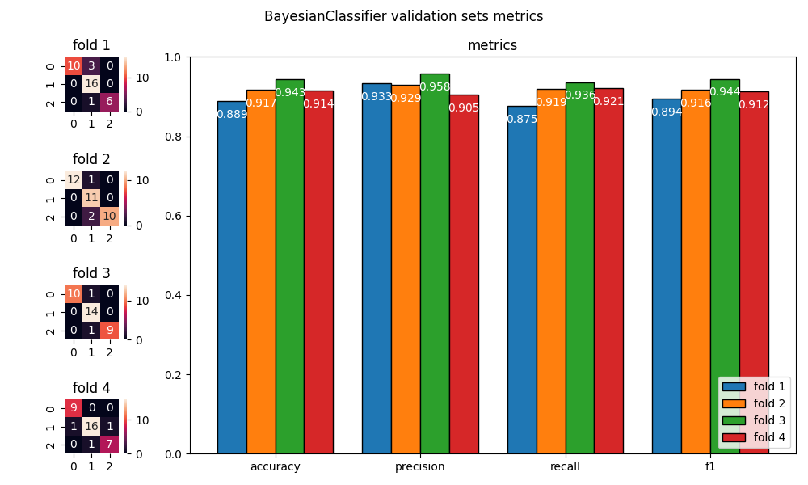 |  |
| 5 |  |
 |
| 6 |  |
 |
- zbyt duża wartość parametru sprzyja przetrenowaniu
- zbyt mała wartość parametru sprzyja niedotrenowaniu
- może to być efekt zwiększania rozmiaru zbioru treningowego w porównaniu do zbioru walidacyjnego
Parametr N_BINS
Parametr ten kontroluje ilość przedziałów w dyskretyzacji każdej kolumny danych wejściowych do klasyfikatora.
N_BINS |
porównanie przebiegów krzyżowania | osiągi najlepszego przebiegu krzyżowania |
|---|---|---|
| 2 |  |
 |
| 3 |  |
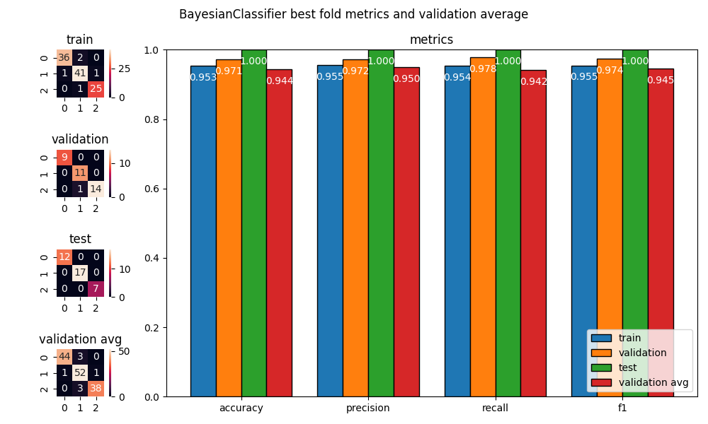 |
| 5 | 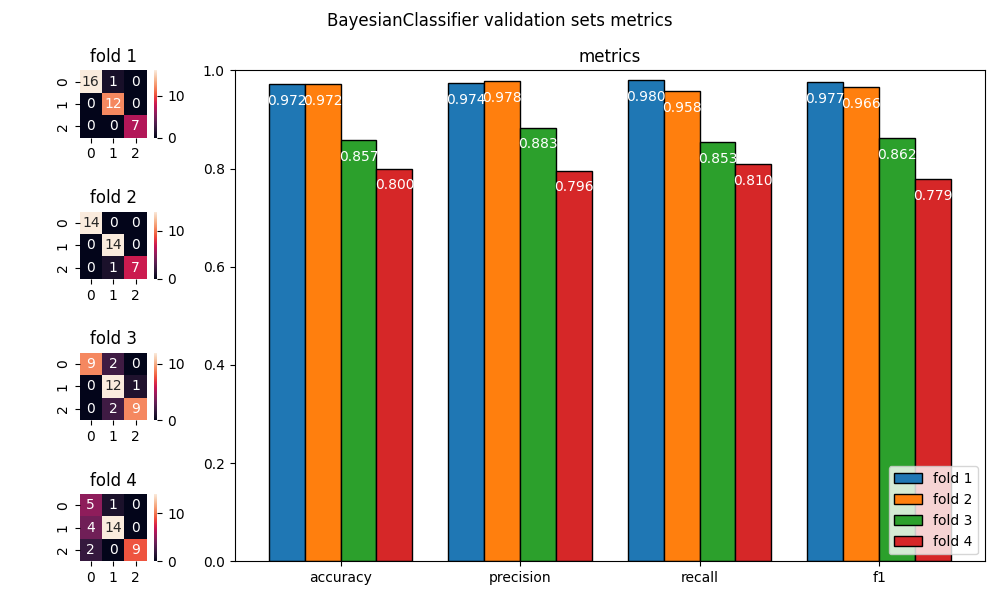 |  |
| 7 | 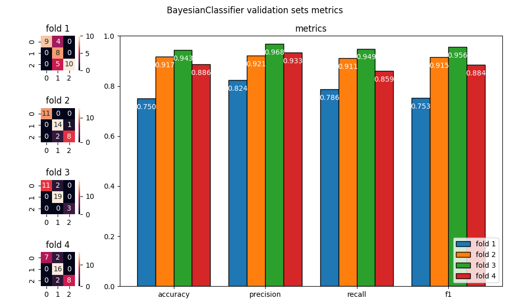 | 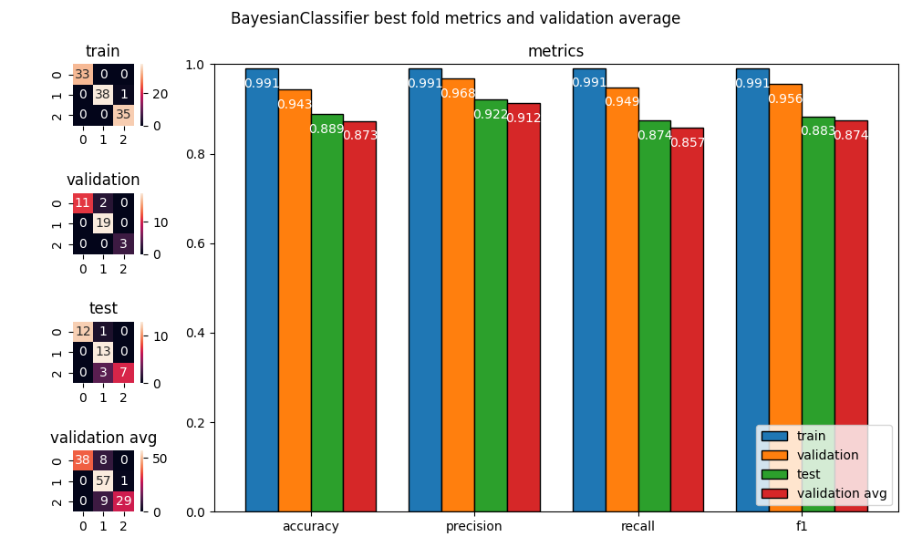 |
| 10 | 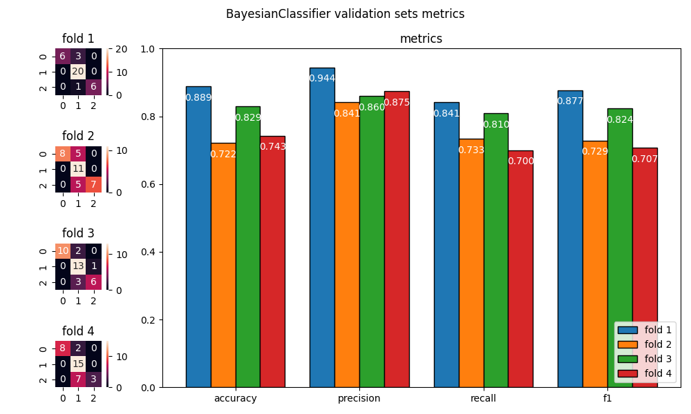 |  |
- zbyt duża wartość parametru sprzyja przetrenowaniu
- zbyt mała wartość parametru sprzyja niedotrenowaniu